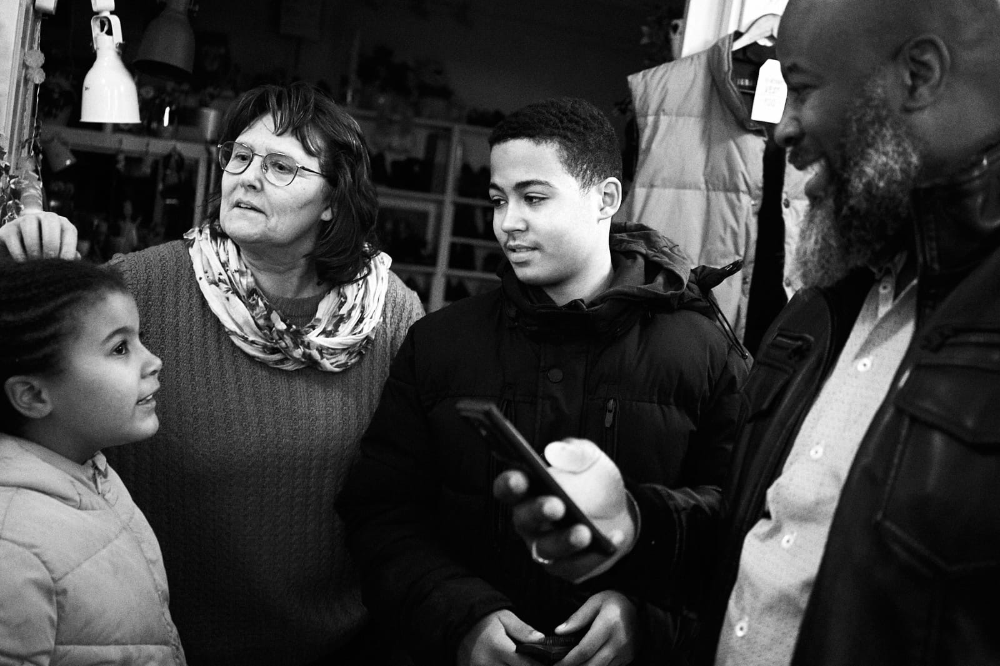
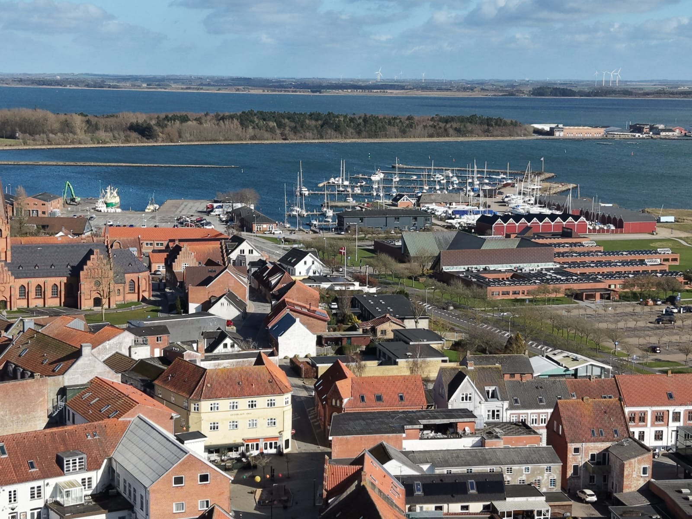

Vi er en levende menighed, der samles om troen på Jesus Kristus. Vores fællesskab er bygget på åbenhed, varme og en dyb respekt for hvert enkelt menneske. Uanset om du har været troende hele dit liv eller er nysgerrig på den kristne tro, er du velkommen her. Vi mødes hver søndag til gudstjeneste, bøn og lovsang — og i løbet af ugen tilbyder vi forskellige grupper og aktiviteter for alle aldre. Vi drømmer om at være en kirke, der gør en forskel i lokalsamfundet, og vi inviterer dig til at være en del af den rejse.



Forankret i Guds ord og levende i bøn og lovsang.
Et sted hvor alle hører til og kan vokse sammen.
Vi tjener hinanden og vores lokalsamfund med kærlighed.
📍 Aagade 8, 7900 Nykøbing Mors
Gaver til kirkens arbejde kan indbetales på:
MobilePay: 49 99 54
Bankkonto: 9100-1025 888 371